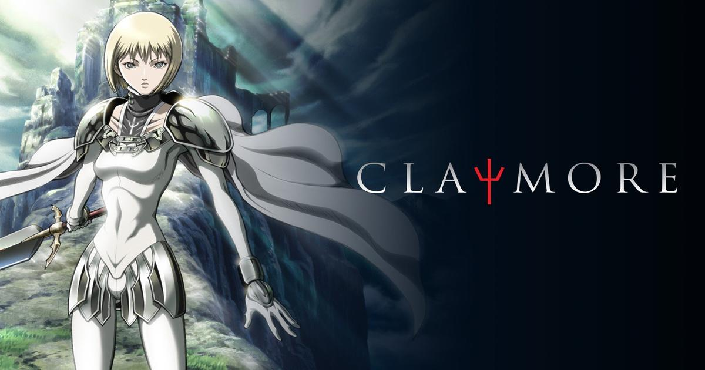
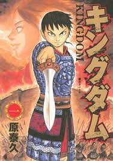
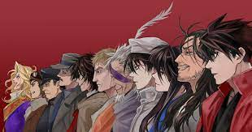

Mangas Medievales.
-

Claymore.
Claymore transcurre en un mundo ficticio cohabitado por el hombre y por una especie conocida como Yoma. Según el saber popular, los Yoma son depredadores naturales de los seres humanos. Una capacidad innata de los Yoma es la de cobrar forma humana, lo que les permite vivir a escondidas de su presa. Los únicos seres capaces de identificar a estas criaturas y eliminarlas son las guerreras conocidas entre los humanos como Claymores.
-
Seven Deadly Sins.
Elizabeth Liones, la tercera princesa del Reino de Liones, tras el golpe de estado hecho por los Caballeros Sagrados decide huir y buscar a los ya desaparecidos caballeros que se hacen llamar Los Siete Pecados Capitales, cuya orden está conformado por los peores criminales del reino.
-

Kingdom.
Han pasado millones de años desde los tiempos de las leyendas, cuando los mundos del hombre y los dioses seguían siendo los mismos. En estos tiempos, fueron los deseos del hombre los que movieron el mundo. Es el período de la guerra de 500 años: la Era de los Estados Combatientes. Kingdom es la historia de un niño que se convirtió en un gran general y en todas las pruebas y el derramamiento de sangre que lo llevaron allí.

Mangas de fantasia
-

Drifters.
Durante la Batalla de Sekigahara, Shimazu Toyohisa logra herir gravemente a Ii Naomasa, quien decide retirarse. Mientras Toyohisa vaga sin rumbo por el campo de batalla, herido y desangrándose, es tele-transportado a un corredor con varias puertas. En el centro se encuentra un extraño hombre con varios documentos en su escritorio, entre los cuales hay uno referente a Shimazu. Antes de poder manifestar su sorpresa, la puerta más cercana lo succiona y se despierta en otro mundo donde personajes históricos y grandes guerreros como él han sido tele-transportados desde distintas épocas y lugares del mundo.
-
Hunter X hunter.
Los Hunters son personas que se dedican principalmente a rastrear tesoros, descubrir o cazar criaturas mágicas y algunas veces otros hombres. Pero, estas actividades requieren una licencia, y menos de uno entre cien-mil puede pasar el examen de cualificación. Aquellos que logren pasar el duro examen se ganarán el acceso a áreas restringidas y el derecho a llamarse a si mismos Hunters.
-
One piece.
La serie comienza con la ejecución de Gol D. Roger, un hombre conocido como el Rey de los Piratas. Poco antes de su muerte, Roger hace mención a su gran tesoro legendario, el One Piece, ya que puede ser tomado por todo aquél que lo desee. Esto marca el inicio de una era conocida como la Gran Era Pirata. Como resultado, un sinnúmero de piratas zarparon hacia Grand Line con el objetivo de encontrarlo.